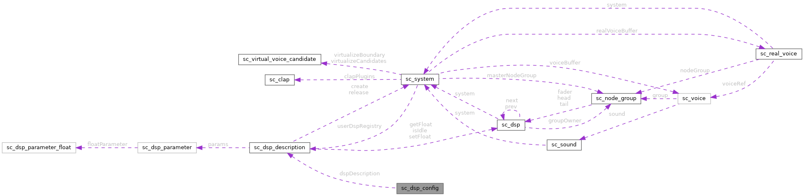

|
Sound Bakery
Open-source audio middleware for games
|
|
Sound Bakery
Open-source audio middleware for games
|
Runtime configuration for creating a DSP unit. More...
#include <sound_chef.h>

Public Attributes | |
| sc_uint32 | handle |
| const sc_dsp_description * | dspDescription |
| const clap_plugin_factory_t * | clapFactory |
Runtime configuration for creating a DSP unit.
DSP units are created with sc_dsp_description objects. The sc_system stores/knows about two description arrays. One is internal and lets users create units using the sc_dsp_type. The other is external and lets users create units with a custom type.
To support creating internal and external units, all descriptions are looked up by a handle. If the handle is between 0 and sc_dsp_type_count, the handle is used to index the internal description array. If the handle is greater than sc_dsp_type_count, sc_dsp_type_count is subtracted from the handle and used as the index into the external description array.